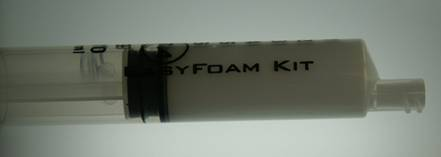
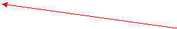
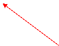
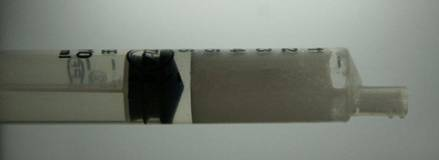
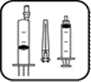
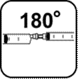
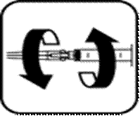
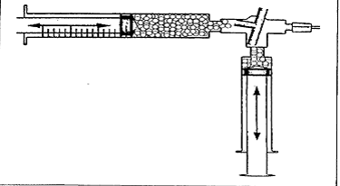

RÉSUMÉ DES CARACTÉRISTIQUES DU PRODUIT
ANSM - Mis à jour le : 01/07/2013
AETOXISCLEROL TAMPONNE 2 POUR CENT (40 mg/2 ml), solution injectable (IV) en ampoule
2. COMPOSITION QUALITATIVE ET QUANTITATIVE
Pour une ampoule.
Pour la liste complète des excipients, voir rubrique 6.1
pH : 6.5 - 8.0
La solution pourra être injectée soit sous forme liquide, soit sous forme mousse (cf 4.2 posologie).
4.1. Indications thérapeutiques
Sclérose des varices de moyen calibre.
4.2. Posologie et mode d'administration
Voie intraveineuse (IV) stricte.
Des conditions d’asepsie strictes s'imposent lors de la manipulation d’AETOXISCLEROL.
Le choix de la concentration se fera en fonction du type et du diamètre des varices à scléroser. Pour les varices non visibles, le diamètre doit être mesuré par échographie.
Le sclérosant est administré en petites quantités sur plusieurs sites d’injection le long de la veine, sous forme liquide ou mousse. La forme mousse (mélange sclérosant/air) est obtenue à partir des solutions à 2 et à 3% et doit être utilisée exclusivement pour les veines de moyen et gros calibres.
L'objectif est de parvenir à la destruction optimale de la paroi du vaisseau avec la concentration minimale de produit sclérosant nécessaire pour un résultat clinique, une quantité et/ou une concentration trop importante risquant d’entraîner une pigmentation ou d'autres séquelles indésirables.
Le nombre d’injections sera évalué par le praticien, en fonction du diamètre et de la longueur de la varice. La dose est indépendante du poids. Etant donné que le volume à injecter par séance est limité, plusieurs séances sont généralement nécessaires (2 à 4 en moyenne).
Il est souhaitable de commencer chaque séance d’injection par l’administration d’une dose test minime, afin de s’assurer de l’absence d’allergie.
Inspecter visuellement la solution avant utilisation. Les solutions qui contiennent des particules ne doivent pas être utilisées.
Bien s’assurer de la position de l’aiguille dans la varice idéalement sous contrôle échographique.
AEOXISCLEROL est un produit à usage unique par voie parentérale. Une fois que l’ampoule est ouverte, utiliser immédiatement et jeter toute quantité résiduelle inutilisée.
Posologie
Forme Liquide
La dose totale recommandée est de 1 à 4 ml de solution injectable par séance (1/2 à 2 ampoules), répartie en plusieurs sites (0.1 à 2 ml par site d’injection).
Ne pas dépasser la dose maximale de 4 ml de liquide par séance, indépendamment du poids corporel.
Forme Mousse
La dose totale recommandée est de 2 à 8 ml de mousse injectable par séance (liquide + air), répartie en plusieurs sites (0.1 à 2 ml par site d’injection).
Ne pas dépasser la dose maximale de 16 ml de mousse par séance, indépendamment du poids corporel.
Préparation de la mousse
Les spécialités AETOXISCLEROL 2% et 3% peuvent être converties en une forme mousse destinée au traitement des veines de gros calibre. Les concentrations de 0.25 à 0.5% ne permettent pas l’obtention d’une mousse de bonne qualité.
La mousse doit être préparée de manière extemporanée par un praticien préalablement formé à cette technique particulière de préparation et d’administration. L’administration doit être réalisée de manière idéale sous contrôle échographique.
La mousse est préparée de manière extemporanée par un praticien expérimenté en incorporant de l’air stérile, c’est-à-dire filtré sur 0.2µm si prélevé de l’air ambiant, à la solution injectable. Ceci est réalisé à l’aide d’un dispositif le plus souvent composé de deux seringues connectées l’une à l’autre. Les va-et-vient des pistons des seringues permettent l’incorporation d’air et conduisent à la transformation du liquide en mousse. Les précautions particulières de manipulation sont détaillées au paragraphe 6.6.
Dans la pratique, toutes les mousses ne sont pas identiques. Leurs paramètres physiques, critères importants pour déterminer la qualité de la mousse (taille des bulles, viscosité, homogénéité), peuvent être différents. Les critères d’une mousse propre à l’injection pour sclérothérapie ainsi que des exemples de dispositifs permettant d’obtenir la mousse sont définis au paragraphe 6.6.
Chez l’adulte, une dose totale de 10 ml de mousse par séance et par jour – indépendamment du poids corporel – ne devra pas être dépassée. En pratique, les posologies utilisées sont souvent nettement inférieures aux quantités maximales indiquées, en moyenne 2-8 ml par séance (injectés dans une ou les deux jambes).
Lors de la sclérothérapie à la mousse de varices non-visibles, la ponction directe et l’injection devront être contrôlées par échographie (de préférence par écho Doppler).
Population pédiatrique
AETOXISCLEROL n'est pas indiqué chez l’enfant.
· Hypersensibilité au Lauromacrogol 400 ou à l’un de ses excipients
· Patients immobilisés ou alités de façon prolongée, quelle que soit la cause
· Patients présentant un risque élevé de thrombose : thrombophilie familiale, facteurs de risque multiples (contraception hormonale, traitement hormonal substitutif, obésité importante, tabac, immobilité prolongée, etc…)
· Episode thrombo-embolique récent (thrombose superficielle aiguë, thrombose veineuse profonde, embolie pulmonaire)
· Chirurgie récente
· Varices induites par une tumeur pelvienne ou abdominale (sauf si la tumeur a été retirée)
· Affection systémique non contrôlée (diabète de type I, thyréotoxicose, tuberculose, asthme, tumeur, infection systémique, troubles de dyscrasie sanguine, affection respiratoire aiguë, affection cutanée)
· Cancer évolutif
· Incompétence valvulaire significative au niveau du réseau veineux profond,
· Artériopathie oblitérante
· Veines superficielles de très gros calibre présentant des communications importantes avec le réseau veineux profond
· Phlébite migrante
· Erysipèles et lymphangite au niveau de la zone à traiter
· Infection aiguë
· Foramen ovale perméable symptomatique connu
4.4. Mises en garde spéciales et précautions d'emploi
Avant le traitement, le praticien doit rechercher les facteurs de risque et informer le patient des risques que présente la technique envisagée.
La sclérothérapie est contre-indiquée chez les patients présentant un risque élevé d’évènements thromboemboliques, mais doit également être évitée dans la plupart des situations à moindre risque. Elle n’est notamment pas recommandée chez les patients ayant des antécédents d'événements thromboemboliques. Néanmoins, si la sclérothérapie est jugée nécessaire, une thérapie d’anticoagulation préventive peut être initiée.
La présence d'un FOP peut favoriser la survenue de graves effets artériels indésirables, du fait de la circulation possible de produit, de bulles ou de particules dans la partie droite du cœur. Par conséquent, la recherche d’un FOP est conseillée avant la sclérothérapie de varices chez les patients ayant des antécédents d’accidents cérébro-vasculaires graves, d’HTAP ou de migraine avec aura.
L’utilisation d’AETOXISCLEROL est déconseillée chez les patients porteurs d’un FOP connu mais asymptomatique. En cas d’administration, il convient d'utiliser des volumes plus faibles et d'éviter tout effort à glotte fermée (manœuvre de Valsalva) pendant les minutes qui suivent l'injection. Chez les patients migraineux, il convient d’utiliser des volumes plus faibles.
Les patients atteints d'un FOP se sont avérés être plus susceptibles de souffrir d'effets indésirables neurologiques temporaires, tels que des troubles visuels et la migraine, en particulier après des injections avec de la mousse sclérosante. Les patients avec des antécédents de migraine doivent être traités avec soin.
Une extrême prudence est recommandée en cas d'utilisation chez les patients atteints d’affections artérielles sous-jacentes, notamment en cas d’'athérosclérose périphérique sévère ou de thromboangéite obliterante (maladie de Buerger).
En raison du risque d'extension de thrombose dans le système veineux profond, il est indispensable d'évaluer soigneusement la continence valvulaire avant toute injection et d’injecter lentement de faibles quantités de produit dans la varice (pas plus de 2 ml). La perméabilité des veines profondes doit être évaluée par une méthode non invasive telle que l'échographie duplex. La sclérothérapie veineuse ne doit pas être réalisée si une incontinence valvulaire significative ou une insuffisance veineuse profonde est détectée, lors des épreuves de Trendelenburg ou de Perthes, ou lors d’une phlébographie par exemple.
Si l'insuffisance veineuse est associée à un lymphoedème, l'injection sclérosante peut aggraver la douleur et l'inflammation locale pendant plusieurs jours ou plusieurs semaines. Les patients doivent être informés de l’éventualité de cette phase, ce qui ne compromet en aucun cas l'efficacité.
L’association aux bêta-bloquants risque de réduire les réactions cardiovasculaires de compensation en cas de choc anaphylactique.
Une pigmentation peut être favorisée en cas d’épanchement sanguin au niveau du site d’injection (en particulier lors du traitement des veines superficielles de petit calibre avec les concentrations 0,25% ou
0,50 %) et quand la compression n'est pas utilisée.
Précautions à prendre au moment de l’injection :
Toute injection en dehors d’une veine peut provoquer une nécrose grave. De même, une injection intra-artérielle est particulièrement grave et peut avoir pour conséquence de larges nécroses musculaires ou cutanées, voire la nécessité d’une amputation. Faire preuve d’une grande prudence lors du positionnement de l'aiguille par voie intraveineuse et utiliser le volume minimal efficace à chaque site d’injection. L’échoguidage est recommandé afin d'éviter des extravasations et des injections intra-artérielles.
Lors du traitement de varices tronculaires, l’injection de mousse doit être effectuée à une distance minimum de 8 à 10 cm par rapport à la crosse, compte tenu du risque de passage d’un bolus de mousse dans le système veineux profond.
Une extrême prudence est recommandée en cas d’injection au niveau du pied et de la zone malléolaire du fait du risque accru d'injection accidentelle intra-artérielle. Seule la concentration 0,50% peut être utilisée pour la sclérose des varicosités et des varices du pied et de la région périmalléolaire.
Surveillance post-injection :
Des réactions allergiques (notamment des réactions anaphylactiques) ayant été observées, le médecin doit être préparé à la survenue possible d'une réaction anaphylactique et doit être prêt à la traiter convenablement. Le matériel de réanimation d'urgence doit être immédiatement disponible. Une attention particulière doit être portée aux patients présentant une respiration difficile (asthme bronchique) ou une forte prédisposition aux allergies (voir rubrique 4.2).
Pendant et dans les minutes qui suivent l’administration, surveiller les manifestations évocatrices d’une hypersensibilité (rougeur cutanée et conjonctivale, prurit, toux…) et les manifestations neurologiques (scotomes, amaurose, migraine avec aura, paresthésie, déficit focalisé).
Il est recommandé de réaliser un examen de suivi clinique et échographique dans un délai suffisant d’environ 1 mois, afin de contrôler l’efficacité du traitement et la survenue d’éventuels effets indésirables. En effet, des cas de thrombose veineuse profonde et d’embolie pulmonaire ont été rapportés après sclérothérapie de varices superficielles, jusqu’à 4 semaines après le traitement sclérosant. La mise en place d’une compression adaptée après le traitement peut également être envisagée pour réduire le risque de thrombose veineuse profonde.
Ce médicament contient de faibles quantités d’éthanol (alcool), inférieures à 100mg par ampoule.
4.5. Interactions avec d'autres médicaments et autres formes d'interactions
Aucune étude d’interaction médicamenteuse n’a été réalisée.
La sécurité d’emploi au cours de la grossesse n'est pas établie. A ce jour, il n’existe pas ou peu de données sur l'administration d’AETOXISCLEROL chez la femme enceinte. Les études animales de reprotoxicité sont insuffisantes. Le traitement ne peut être initié qu’après la grossesse.
AETOXISCLEROL ne doit être utilisé qu'en cas de nécessité, pour le soulagement symptomatique, si les bénéfices potentiels l'emportent sur les risques potentiels pour le fœtus.
Allaitement
On ne sait pas si le lauromacrogol 400 est excrété dans le lait maternel.
Fertilité
On ne sait pas si le lauromacrogol 400 affecte la fertilité.
4.7. Effets sur l'aptitude à conduire des véhicules et à utiliser des machines
Très rarement, l’injection intra-artérielle est à l'origine d'une nécrose tissulaire importante, pouvant aller jusqu’à l’amputation.
Les effets indésirables les plus graves sont le choc anaphylactique et l'embolie pulmonaire ; des décès ont pu être rapportés chez des patients recevant du lauromacrogol.
Les événements indésirables sont indiqués ci-dessous par classe organique :
|
Système organe |
Effets indésirables |
|
Affections du système immunitaire |
Choc anaphylactique, angiooedème, urticaire, asthme |
|
Affections du système nerveux |
Céphalées, migraine, paresthésie, perte de conscience, état confusionnel, vertiges, accident ischémique transitoire (AIT), accident vasculaire cérébral (AVC), dysgueusie |
|
Affections oculaires |
Phosphènes, scotomes, amaurose |
|
Affections cardiaques |
Palpitations. Du fait des propriétés arythmogènes du lauromacrogol possibilité de collapsus cardio-vasculaire lié au passage systémique du produit |
|
Affections vasculaires |
Néovascularisation |
|
Thrombophlébite superficielle, phlébite |
|
|
Thrombose veineuse profonde |
|
|
Embolie pulmonaire |
|
|
Syncope vasovagale |
|
|
Vascularite, vascularite leucocytoclasique |
|
|
Spasme artériel |
|
|
Collapsus circulatoire |
|
|
Affections respiratoires, thoraciques et médiastinales |
Dyspnée, sensation d’oppression, toux |
|
Affections gastro-intestinales |
Nausées |
|
Affections de la peau et du tissu sous-cutané |
Hyperpigmentation de la peau, ecchymose |
|
Dermatite allergique, urticaire de contact, érythème |
|
|
Hypertrichose (dans la zone traitée) |
|
|
Troubles généraux et accidents liés au site d’administration |
Douleur au point d’injection (court terme), thrombose au point d’injection (caillots sanguins intravariqueux locaux), hématome au point d’injection |
|
Induration, œdème Des réactions locales à type de nécrose en particulier au niveau de la peau et des tissus sous-jacents (et dans quelques rares cas, au niveau des nerfs), ont été observées dans le traitement des varices des jambes après l’injection par inadvertance dans les tissus environnants (injection para-veineuse). Le risque est accru avec l’augmentation des concentrations d’Aetoxisclérol et des volumes injectés. |
|
|
Fièvre, bouffées de chaleur |
|
|
Investigations |
Pression artérielle anormale |
|
Lésions et intoxications |
Lésion du nerf |
Les effets indésirables rapportés avec la forme mousse sont les mêmes que ceux rapportés avec la forme liquide. Les troubles visuels et ou neurologiques du type scotomes, migraines sont rapportés plus fréquemment avec la forme mousse qu’avec la forme liquide.
Les patients atteints d'un foramen ovale perméable (FOP) se sont avérés être plus susceptibles de souffrir d’effets indésirables neurologiques temporaires, tels que des troubles visuels et des migraines, en particulier après des injections avec de la mousse sclérosante.
Déclaration des effets indésirables suspectés :
La déclaration des effets indésirables suspectés après autorisation du médicament est importante. Elle permet une surveillance continue du rapport bénéfice/risque du médicament. Les professionnels de santé déclarent tout effet indésirable suspecté via le système national de déclaration : Agence nationale de sécurité du médicament et des produits de santé (Ansm) et réseau des Centres Régionaux de Pharmacovigilance - Site internet: www.ansm.sante.fr
L’injection d’un volume trop important peut induire des effets indésirables systémiques.
5. PROPRIETES PHARMACOLOGIQUES
5.1. Propriétés pharmacodynamiques
Classe pharmacothérapeutique :
THÉRAPEUTIQUE ANTIVARIQUEUSE / MÉDICAMENTS SCLÉROSANTS POUR INJECTION LOCALE. Code ATC: C05BB02.
Le lauromacrogol 400 est un agent sclérosant. L'injection intraveineuse induit la formation d’un thrombus. Cela entraîne généralement l’occlusion de la veine au niveau du site d’injection. La formation de tissu fibreux qui en résulte est à l'origine de l'oblitération veineuse partielle ou totale qui peut ou non être permanente.
La sclérothérapie à la mousse Aetoxisclérol repose sur des études cliniques contrôlées et des études cas-témoins utilisant une mousse d’Aetoxisclérol, homogène, à fines bulles et visqueuse.
Dans une étude multicentrique randomisée réalisée en ouvert (étude ESAF), 106 patients présentant une varice de la veine saphène interne ont été traités soit par Aetoxisclerol 3% sous forme de mousse, élaborée à l’aide du kit EasyFoam® de formation de mousse, soit avec Aetoxisclerol 3 % sous forme liquide. Le critère d’évaluation primaire a été la disparition d’un reflux de plus 0,5 seconde, mesurée par écho-doppler 3 cm au-dessous de la jonction saphéno-fémorale 3 mois après la dernière injection.
Après l’injection de mousse d’Aetoxisclerol, un pourcentage significativement supérieur de patients (69 %) a atteint le critère d’évaluation par rapport au groupe contrôle (27 %).
Les critères d’évaluation secondaire (occlusion de la veine, temps de reflux, temps de remplissage, satisfaction des patients, etc…) ont également été améliorés sous traitement par Aetoxisclerol mousse.
Le nombre de séances de traitement nécessaire pour atteindre un résultat thérapeutique a été en moyenne de 1,3 dans le groupe Aetoxisclerol mousse contre 1,6 dans le groupe contrôle.
Il n’a pas été observé de différences entre les 2 groupes concernant l’incidence des effets indésirables.
5.2. Propriétés pharmacocinétiques
La demi-vie est courte (1,6 heures). L’élimination est rapide dans les fèces et les urines.
5.3. Données de sécurité préclinique
Le lauromacrogol 400 a provoqué dans toutes les espèces étudiées une hématurie. À partir d’une posologie de 4 mg par kg de poids corporel par jour, il a été observé chez les rats mâles après une administration quotidienne pendant 7 jours consécutifs une augmentation du poids du foie, et à partir d’une posologie de 14 mg/kg/jour une augmentation des concentrations d’ALAT et d’ASAT.
Mutagénicité
Le test d’Ames ainsi que le test du micronoyau in vivo chez la souris ont donné des résultats négatifs. Dans le test d’aberrations chromosomiques in vitro, le lauromacrogol 400 a induit des polyploïdies dans les cellules de mammifères. Toutefois, dans le cadre d’une utilisation clinique, aucun potentiel génotoxique cliniquement significatif n’est à attendre.
Toxicité sur la reproduction
L’administration intraveineuse quotidienne de lauromacrogol 400 pendant plusieurs semaines ou au cours de l’organogenèse n’a pas induit chez le rat d’effet sur la fertilité des mâles et des femelles ou sur le développement embryonnaire précoce. Elle n’a pas non plus induit ni chez le rat ni chez le lapin d’effet tératogène, seuls des effets embryotoxiques et fœtotoxiques (augmentation de la mortalité embryonnaire et fœtale, diminution du poids des fœtus) ont été observés à des doses toxiques pour la mère. Pendant une durée d’utilisation au cours de l’organogenèse limitée à des intervalles de 4 jours consécutifs, aucune toxicité maternelle ni embryonnaire ou fœtale n’est survenue (chez le lapin). Le développement périnatal et postnatal, le comportement et la reproduction n’ont pas été altérés chez des rats dont les mères ont reçu pendant la fin de la gestation et pendant la lactation du lauromacrogol 400 par voie intraveineuse tous les 2 jours. Le lauromacrogol 400 traverse la barrière placentaire chez le rat.
Hydrogénophosphate de sodium dihydraté, dihydrogénophosphate de potassium, alcool, eau pour préparations injectables.
AETOXISCLEROL TAMPONNE 2 POUR CENT (40 mg/2 ml), solution injectable (IV) en ampoule doit être utilisé seul.
5 ans. Le produit doit être utilisé immédiatement après ouverture de l’ampoule.
Si la totalité du produit n’est pas utilisé pour une injection, le produit résiduel doit être jeté.
6.4. Précautions particulières de conservation
Pas de précautions particulières de conservation.
6.5. Nature et contenu de l'emballage extérieur
2 ml en ampoule (verre de type I).
6.6. Précautions particulières d’élimination et de manipulation
La manipulation d’AETOXISCLEROL doit se faire dans des conditions strictes d’asepsie
L’utilisation de la sclérothérapie à la mousse est réservée aux praticiens préalablement formés à cette technique particulière.
Les ampoules présentent une barre de cassure. Elles sont à usage unique.
Les injections doivent être réalisées par voie intraveineuse.
Il est nécessaire d’utiliser des aiguilles très fines pour la forme liquide et moins fines (diamètre au moins 25G) pour la forme mousse et des seringues en plastique, coulissant bien et de manipulation aisée. Pour l’injection de la mousse, il est préférable d’utiliser des seringues non siliconées.
Préparation d’une mousse sclérosante
Plusieurs techniques peuvent être utilisées telles que DSS, Easyfoam, Sterivein, Tessari. La plupart de ces techniques consistent à mélanger la solution sclérosante avec de l'air stérile, en effectuant des passages répétés à travers 2 seringues reliées.
L’utilisation d’un filtre de 0.2 µm est indispensable pour l’obtention d’une mousse stérile à partir de l’air ambiant.
Différents critères déterminent la qualité d’une mousse. Les critères d’une mousse propre à l’injection pour sclérothérapie ainsi que des exemples de dispositifs permettant d’obtenir la mousse sont présentés ci-dessous.
Critères spécifiques pour la préparation d’une mousse sclérosante propre à l’injection pour sclérothérapie :
1. La concentration du sclérosant :
La mousse peut être fabriquée avec des concentrations de 2 à 3% de Lauromacrogol 400 (Polidocanol).
2. Le volume des seringues :
Il est recommandé d’utiliser une seringue de 10 mL et une seringue de 5 mL. La seringue de 5 ml est préférable pour réaliser l’injection.
3. Le ratio sclérosant air :
De façon générale, ce ratio est de 1 volume de sclérosant pour 4 volumes d’air. Pour EasyFoam, un ratio de 1 volume de sclérosant pour 4,625 volumes d’air est utilisé.
4. La sécurité des raccords :
Les raccords doivent permettre un verrouillage des seringues et permettre la mise en pression lors de la préparation/homogénéisation.
5. Le nombre et la nature des mouvements de va-et-vient :
Un mouvement consiste en la transition de tout le contenu de la seringue n°1 dans la seringue n°2 puis de tout le contenu de la seringue n°2 dans la seringue n°1. Ce mouvement peut être réalisé avec ou sans compression.
Une fabrication de mousse peut consister par exemple en 5 va-et-vient sans pression puis 7 va-et-vient avec pression à ½ (les 10 mL de mousse comprimés dans une seringue dont le piston est maintenu à la graduation 5 mL). Le praticien devra respecter scrupuleusement le nombre de va-et-vient définis en fonction de la technique choisie.
6. L’aspect macroscopique de la mousse dans la seringue:
L’aspect de la mousse devra être vérifié systématiquement en expulsant un peu de mousse de la seringue avant injection.
La mousse doit être compacte, homogène, sans bulle visible à l’œil nu (diamètre < 0,3mm). En cas de bulles visibles, la préparation doit être recommencée.
La mousse doit être suffisamment dense. L’aspect doit se rapprocher d’un aspect de « crème chantilly ».
7. Le temps total de préparation :
Du premier au dernier va-et-vient il doit s’écouler une dizaine de secondes.
8. Le temps maximum de la préparation à l’injection :
La mousse devra être injectée au maximum 60 secondes après le début de sa préparation. Après 60 secondes, la mousse résiduelle doit être jetée. Il faut repréparer de la mousse si nécessaire.
 Bonne mousse
 Mauvaise mousse
Exemples de dispositifs (schémas)
1) 2 voies
 
2) 3 voies

Pour cette méthode il est recommandé d’utiliser un robinet luer-lock. Il doit être positionné en oblique lors de la phase d’homogénisation. La turbulence associée sera dépendante de l’angle dans lequel le robinet est positionné.
7. TITULAIRE DE L’AUTORISATION DE MISE SUR LE MARCHE
Chemische Fabrik KREUSSLER & CO GmbH
Rheingaustrasse 87-93
65203 Wiesbaden
ALLEMAGNE
8. NUMERO(S) D’AUTORISATION DE MISE SUR LE MARCHE
· 347 754-7: 2 ml en ampoule (verre); boîte de 5.
9. DATE DE PREMIERE AUTORISATION/DE RENOUVELLEMENT DE L’AUTORISATION
[à compléter par le titulaire]
10. DATE DE MISE A JOUR DU TEXTE
[à compléter par le titulaire]
Sans objet.
12. INSTRUCTIONS POUR LA PREPARATION DES RADIOPHARMACEUTIQUES
Sans objet.